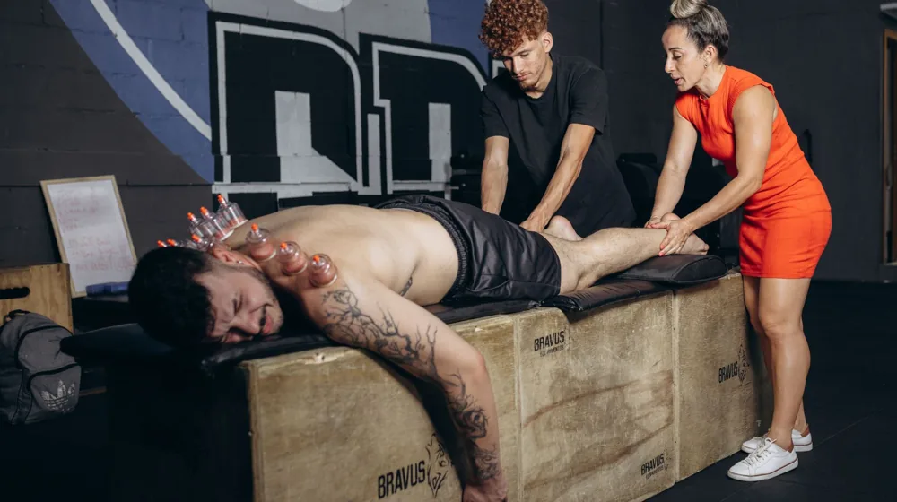

근육통인 줄 알았는데 부상? 운동 전후 통증, 확실히 구분하는 3가지 신호
사진: Maksim Goncharenok / Pexels (무료 이미지, 출처 표기)
운동 후 찾아오는 통증, 근육통과 부상은 어떻게 다를까요?

열심히 운동하고 난 뒤 찾아오는 통증은 때로는 성취감의 상징처럼 느껴지기도 합니다. 하지만 이 통증이 단순히 근육의 피로를 알리는 신호일까요, 아니면 치료가 필요한 부상의 경고일까요? 많은 분들이 근육통과 부상 사이에서 혼란을 겪곤 합니다. 이 글에서는 운동 후 발생할 수 있는 통증의 종류를 명확히 구분하고, 언제 전문가의 도움이 필요한지 판단할 수 있는 실질적인 정보를 제공합니다.
근육통과 부상, 핵심 차이점 3가지 비교
근육통과 부상은 통증의 발생 시점, 특성, 그리고 신체 기능에 미치는 영향에서 분명한 차이를 보입니다. 아래 표를 통해 주요 기준을 비교해보고, 자신의 통증이 어느 쪽에 더 가까운지 판단해보세요.
이러한 차이점을 인지하는 것이 자신의 통증을 정확히 이해하고 적절한 조치를 취하는 첫걸음입니다.
지금 바로 체크! 부상이 의심될 때 나타나는 주요 증상
만약 통증이 일반적인 근육통과는 다른 양상을 보인다면, 부상일 가능성을 염두에 두어야 합니다. 다음 증상들이 나타난다면 즉시 운동을 중단하고 전문의와 상담하는 것이 중요합니다.
- 갑작스럽고 날카로운 통증: 운동 중 갑자기 찌르는 듯한 통증이 발생한 경우.
- 부종 또는 멍: 통증 부위에 눈에 띄는 부기나 멍이 동반되는 경우.
- 관절의 불안정성 또는 가동 범위 제한: 관절이 흔들리는 느낌이 들거나, 특정 방향으로 움직이기 어려운 경우.
- 체중 부하의 어려움: 통증으로 인해 다리나 팔에 체중을 싣기 어렵거나 지탱하기 힘든 경우.
- 저림 또는 무감각: 통증 부위 주변으로 감각 이상(저림, 무감각)이 느껴지는 경우.
- 통증이 점점 심해지거나 호전되지 않는 경우: 휴식 후에도 통증이 줄어들기는커녕 더 심해지거나 며칠이 지나도 나아지지 않는 경우.
- 열감 및 발적: 통증 부위가 뜨거워지거나 붉게 변하는 경우.
위 증상 중 하나라도 해당한다면, 단순한 근육통으로 치부하지 말고 병원을 방문하여 정확한 진단을 받는 것이 현명합니다.
운동 중 부상 예방을 위한 필수 수칙
부상은 예방이 가장 중요합니다. 몇 가지 기본적인 수칙을 지키는 것만으로도 부상 위험을 크게 줄일 수 있습니다. 2026년 08월 기준으로 다음 사항들을 꾸준히 실천해 보세요.
- 충분한 준비 운동(Warm-up)과 정리 운동(Cool-down): 운동 전후 10분 이상 스트레칭과 가벼운 유산소 운동으로 근육을 이완하고 혈액 순환을 돕습니다.
- 올바른 자세 유지: 운동 동작마다 정확한 자세를 숙지하고, 거울을 보며 자신의 자세를 점검하거나 전문가의 지도를 받는 것이 좋습니다.
- 점진적인 강도 증가: 무리한 중량이나 강도로 운동하기보다, 서서히 운동량과 강도를 늘려 근육이 적응할 시간을 줍니다.
- 충분한 휴식과 영양 섭취: 근육은 운동할 때 손상되고, 쉴 때 회복됩니다. 충분한 수면과 균형 잡힌 영양 섭취는 근육 회복에 필수적입니다.
- 내 몸의 소리에 귀 기울이기: 경미한 통증이라도 무시하지 말고, 필요하다면 운동 강도를 낮추거나 잠시 휴식을 취해야 합니다.
이러한 기본적인 원칙들을 지키는 것이 즐겁고 안전한 운동 생활을 위한 가장 중요한 요소입니다.
통증 발생 시 올바른 대처 방법
통증이 발생했을 때 어떻게 대처하느냐에 따라 회복 속도와 부상 악화 여부가 달라질 수 있습니다. 특히 급성 부상의 경우 'RICE(라이스) 원칙'을 기억하세요.
- R (Rest, 휴식): 통증이 있는 부위는 즉시 사용을 중단하고 움직임을 최소화하여 추가 손상을 방지합니다.
- I (Ice, 냉찜질): 부상 직후 15~20분간 냉찜질을 하여 부기와 염증을 가라앉힙니다. 2~3시간 간격으로 반복하는 것이 좋습니다.
- C (Compression, 압박): 압박 붕대 등을 이용해 부상 부위를 적당히 압박하여 부종 확산을 막습니다. 너무 강하게 압박하지 않도록 주의합니다.
- E (Elevation, 거상): 부상 부위를 심장보다 높게 들어 올리면 부종 감소에 도움이 됩니다.
이와 함께, 통증이 심하거나 지속된다면 주저하지 말고 정형외과나 스포츠의학과 같은 전문 의료기관을 방문해야 합니다. 자가 진단만으로 시간을 지체하면 더 큰 문제를 야기할 수 있습니다.
자주 묻는 질문
Q1: 근육통이 있는데 스트레칭을 해도 괜찮을까요?
가벼운 스트레칭은 근육통 완화에 도움이 될 수 있습니다. 하지만 통증이 심하거나 스트레칭 시 오히려 통증이 더해진다면 즉시 중단해야 합니다. 특히 부상이 의심될 때는 스트레칭을 삼가는 것이 좋습니다.
Q2: 근육통과 부상을 구분하기 어렵다면 어떻게 해야 하나요?
스스로 판단하기 어렵다면, 가장 안전한 방법은 전문 의료기관을 방문하여 진찰을 받는 것입니다. 의사나 물리치료사는 정확한 진단과 적절한 치료 계획을 제시해 줄 수 있습니다.
Q3: 통증 완화에 도움이 되는 파스나 연고는 효과가 있나요?
파스나 연고는 일시적으로 통증을 완화하고 염증을 줄이는 데 도움을 줄 수 있습니다. 하지만 이는 근본적인 치료법이 아니며, 부상의 원인을 해결하지는 못합니다. 통증이 계속된다면 전문가와 상담해야 합니다.
이 글에서 제공하는 정보는 일반적인 참고 자료이며, 개인의 건강 상태나 증상에 따라 다를 수 있습니다. 정확한 진단과 치료는 반드시 의료 전문가와 상담하시길 권장합니다.
🔗 이 글도 함께 보면 좋아요: 단백질 보충제 종류 완벽 비교: 나에게 맞는 최적의 선택은?
관련 추천 상품
근육 이완 용품, 폼롤러, 마사지볼, 스포츠 테이프 관련 인기 상품 보러가기
이 포스팅은 쿠팡 파트너스 활동의 일환으로, 이에 따른 일정액의 수수료를 제공받습니다.